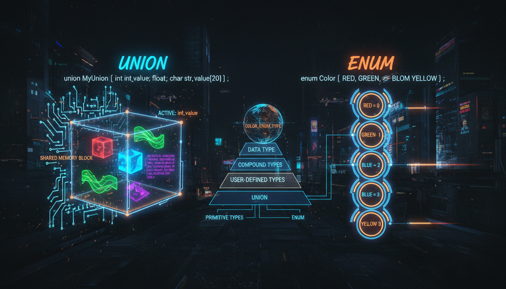

Union, enum, enum class, typedef, using

Union — це спеціальна структура даних, де всі члени розділяють одну й ту саму область пам'яті. Розмір union дорівнює розміру найбільшого члена.
#include <iostream>
union Data {
int i;
float f;
char str[20];
};
int main() {
Data d;
d.i = 42;
std::cout << "Як int: " << d.i << std::endl;
d.f = 3.14f;
std::cout << "Як float: " << d.f << std::endl;
// d.i тепер містить "сміття"!
return 0;
}// Класичний enum
enum Color { RED, GREEN, BLUE };
Color c = RED;
// enum class (C++11) — типобезпечний
enum class Status { OK, ERROR, WARNING };
Status s = Status::OK;
if (s == Status::OK) {
std::cout << "Все добре!" << std::endl;
}